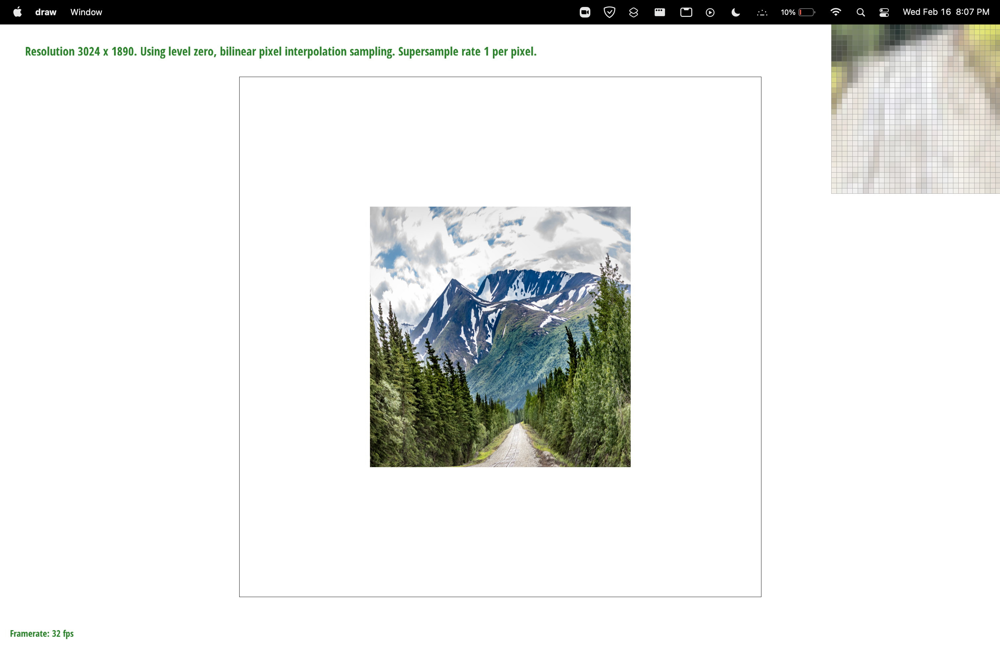

Overview
In this project we built a rasterizer, which takes in descriptions of shapes and maps these shapes to pixels in screen space. The starter code parses an svg file into shapes, launches a viewer with a renderer accepting keyboard input, and then calls the functions in our rasterizer to finally display the svg in the viewer. This project gave us a better understanding of why vector graphics are awesome - we both learned Photoshop in middle school and .svg images always scaled losslessly (no drop in quality) and now we realize that’s because .svg images just describe shapes, which can be sampled at “limitless” intervals.
Section I: Rasterization
Part 1: Rasterizing single-color triangles
The overall approach is we want to color only those pixels that are in the triangle. We rasterize a triangle by first finding the leftmost and rightmost x-values, and topmost and bottommost y-values of the triangle. This gives us all the information we need to restrict our samples within the bounding box defined by the 4 points (leftmost, bottommost), (leftmost, topmost), (rightmost, bottommost), and (rightmost, topmost). Certainly every point outside the bounding box will be outside the triangle, since the point must be beyond the triangle’s outer dimensions.We use two for loops to iterate through every point within this bounding box and check if the sample is inside the triangle using the three line equations (if all dot products are positive, the sample is inside the triangle). If the sample is inside the triangle, then we set/overwrite the color of the sample buffer at the index of the sample to the shape’s color. This lets us draw triangles in a particular sequential order to have overlap in the image.
We didn’t run into any bugs in this task, it worked first try!
Part 2: Antialiasing triangles
Super sampling can be thought of as filtering high frequency signals from an image. For example, edges on a polygon (i.e. at the vertices or visual information directly outside an edge boundary) can vary quickly, resulting in high frequency signals. However, due to the discrete nature of pixels, aliasing artifacts arise because we are unable to capture rapid changes effectively. One of the most visible aliasing artifacts are “jaggies” when drawing triangles. Super sampling eliminates these high frequencies by sampling the image at a singular pixel location more than once (for example, in the pixel’s 4 quadrants as opposed to only its center), and taking the average of the color values. This results in a smoother image which has less jaggies, but can be thought of as “blurrier.”
We use the sample buffer vector to store multiple sample values for each pixel. For example, if our sample rate was 4, we would store 4 consecutive color values for each pixel in the sample buffer. We use a double for loop within a double for loop to execute the algorithm. The first double for loop goes through all the appropriate discrete pixel values. Then, the second double for loop goes through all of the sample locations for a singular pixel. Note that we carefully compute these sample locations so that they lie in the center of each “n-rant.” In other words, recall that a pixel can be thought of as a sqrt(sample_rate) * sqrt(sample_rate) grid. We maintain a count variable to ensure placement into the sample buffer at the appropriate location. Moreover, we only update the sample buffer if the point is inside the given triangle in rasterize_triangle (by the same logic as in task 1). We updated the rasterization pipeline so that rasterize_triangle fills in the sample_buffer (instead of the “real” resolution frame buffer), and in resolve_to_framebuffer, we take averages of consecutive colors in the sample_buffer and output them to the framebuffer. This occurs in the pipeline after all triangles have been rasterized using rasterize_triangle, so we get accurate averages for the overall image. To continue, we also update fill_pixel (so that all supersamples of a pixel are the same color, since it is unnecessary to use supersampling here). Set_sample_rate and set_framebuffer_target are also updated so that the size of the sample buffer accounts for the sampling rate.
|
|
|
|
|
As expected, supersampling with a rate of 16 produces the smoothest image, relativity, filtering out rapidly changing, high frequency signals (and it is highly apparent with the reduction of jaggies on the magenta, skinny triangle.
|
|

|
|
|
More of the discrete pixel space is filled up with lighter colors as we increase sampling rate, resulting in a less jaggy, but arguably more blurry, image.
Errors we encountered: Because we were harnessing the window approach (only choosing to look at a certain window of pixels based on triangle vertices for optimization purposes) when filling the sample buffer, we ran into some early issues regarding appropriately indexing into sample buffer. For example, we were not starting at the correct location in our sample buffer (always starting at index 0, instead of indexing using sample_rate * (j * width + i) + count). Because every location has sample_rate consecutive elements, we would multiply our row-major position with sample_rate to get our starting position. Then, we added a count variable to make sure every pixel location had sample_rate samples. We noticed an issue with our samping because it looked like pixels were only being filled in at the top of our rendered image.
Part 3: Transforms
The overall approach is that we wish to implement some transforms on vectors in homogeneous coordinates, and we can take advantage of the formulas given in lecture. In task 3, we implemented the translate, scale, and rotate functions. Each function returns a matrix that, when left-multiplied by a 3D vector in homogeneous coordinates, returns the translated/scaled/rotated version of it, and takes in obvious parameters like the x and y translation, x and y scale, and degree rotation. These matrices were easy to derive since they are given in lecture, one of the group members saw them already in EECS C106A, and they can also be verified by inspection.
We didn’t have any problems with this part.
We wanted to have cubeman wave originally, but that proved to be difficult. We played with the polygon positions of his arms until he was in this T-pose like position, and then we reduced the dimensions of his torso to (30, 30) to just be smaller in general. We also made him navy-colored.
Section II: Sampling
Part 4: Barycentric coordinates
Please note that this image of an svg image (which uses interpolation) is taken from https://www.alecjacobson.com/weblog/?p=3398.
In general, Barycentric coordinates are a system to describe points within a triangle relative to the triangle’s 3 vertices (the distance from the point to each of the 3 vertices). In other words, it is the coordinate system within a triangle. Geometrically, one can think of barycentric coordinates as dividing a triangle into 3 proportional areas after dropping a straight line from each vertex, with a point within the triangle being the endpoint for each of the 3 segments. In this way, one can calculate the “weights” of each vertex when expressing the point within the triangle as a combination of the 3 vertices. As shown in the above image, interpolation using barycentric coordinates is extremely useful for texture mapping. Instead of defining the properties and color of every discrete point within a triangle, technical artists can instead make the color of the point a combination of the colors of the 3 vertices based on distances to the vertices (or proportional areas, as described earlier). One can achieve an extremely convincing gradient by utilizing this barycentric approach. Instead of considering colors, artists can also interpolate using material properties, among other attributes. In our implementation, we calculate alpha, beta, and gamma (which should add to 1) for each sample point, and weigh the vertex colors by these coefficients. We also resue our suprsampling code here.
Issues we encountered: We did not encounter many bugs on this part, but one aspect we remembered to include was that alpha, gamma, and beta all have to be greater than 0 (which means that we are indeed interpolating INSIDE the triangle and not outside of it). We replace our call to the inside function with this check, which is likely more computationally efficient.
Part 5: "Pixel sampling" for texture mapping
The main idea in this task is to rasterize a triangle with colors from a corresponding texture image; to do so, we can apply our techniques from previous triangle rasterization functions but sample our texture for a color instead of assigning a given color to the point. In task 5, we implement the rasterize_textured_triangle() function, which iterates through the bounding box of the triangle as before, but now computes the barycentric coordinates of each point using the equations from lecture and samples the same coordinate in the full-resolution (level 0 mipmap) texture space, getting a Color which we can add to the sample_buffer. To perform sampling, we wrote two additional functions, sample_nearest() and sample_bilinear(). sample_nearest() takes in uv coordinates and a level (0 for this task), scales the uv coordinates according to the dimensions of the texture space, computes the point in texture space that is closest to the scaled coordinates, and returns the Color of that point. sample_bilinear() functions similarly but instead finds the 4 nearest points in texture space and linearly interpolates horizontally and vertically to get a weighted Color for the point.
We had a few problems with this task. First, we had minor typos in our formulas for alpha and beta that we resolved by carefully copying the lecture slides. We also had confusion on what to do with the coordinates u and v in texture space, but we found a Piazza thread that addressed how the coordinates map identically between texture space and screen space. Our main difficulties here were understanding how to translate between texture space and screen space, which we resolved by relying on Piazza and the lecture slides to fill our gaps in understanding.
Pixel sampling has different definitions in different contexts, but broadly it means sampling a certain space at the pixel’s corresponding location. Like I mentioned earlier, we applied pixel sampling in this task to sample the texture at the nearest point or interpolate the 4 nearest points to get a Color.
|
|
|
|
|
|
Nearest sampling with 1 sample per pixel gave the worst result, with the most jaggies and disconnected regions, while bilinear sampling with 16 samples per pixel gave the best results. Supersampling alleviates many of the disconnected region issues with nearest sampling, but there are still jaggies, although less noticeable. This makes sense because nearest sampling always chooses the closest texture space point to sample from, and this singular data point can result in a lot of variation - supersampling just averages results over the pixel so jaggies still show through. Bilinear sampling immediately resolves most of the jaggies that nearest sampling struggles from. This is because it looks at the samples around it which results in a smoother gradient when the color changes rapidly, as in this location. There are still some outlier points in the bilinear sampling 1 sample per pixel case, such as in the ‘O’ character, that are disconnected, but this case does very well. Adding supersampling on top of bilinear sampling yields the best results, since we are adding more data points that we can average to smooth out disconnected regions. The ‘O’ looks great in the bilinear sampling, 16 samples per pixel case. Our conclusion from this is that there will be a large difference in the methods when there is a sudden color gradient, such as in the location we chose where the color suddenly goes from orange to blue on the boundary, and blue to white for the characters.
Part 6: "Level sampling" with mipmaps for texture mapping
Textures in the background of rendered images often have a far lower texture sampling rate compared to textures closer to the viewpoint. This results in aliasing, and because supersampling textures is computationally heavy, we harness mipmaps. To reduce aliasing and remove high-frequencies from “background textures”, we use a mipmap corresponding to a lower resolution (a higher mipmap level). To calculate the mipmap level to use, in get_level we perform a logarithmic calculation in regards to the amount of “jump” in texture space (uv coordinates) by looking at a given pixel’s neighbors. In the sample function , if we are using 0 level sampling, we use the highest resolution mipmap. For nearest level sampling, we round our result from get_level. For “continuous” level sampling, if the level returned is a decimal, we take the floor and ceiling of that level, weighing (or interpolating) results from the colors returned from sample_nearest (or sample_bilinear - note, these are described in task 5).
Pixel sampling: less effective in alisasing because is still not using lower resolution mipmaps, but in memory, only requires a single mipmap.
Level sampling: Only a little bit more memory usage (about ⅓ more), because mipmaps halve in resolution per level.
Number of samples: Would be more computationally heavy because would have to supersample texture map (which involves a double for loop within a double for loop).
Bug = negative level values, which we had to change to level 0 appropriately.
|
|

|
|
|
|
Section III: Art Competition
If you are not participating in the optional art competition, don't worry about this section!